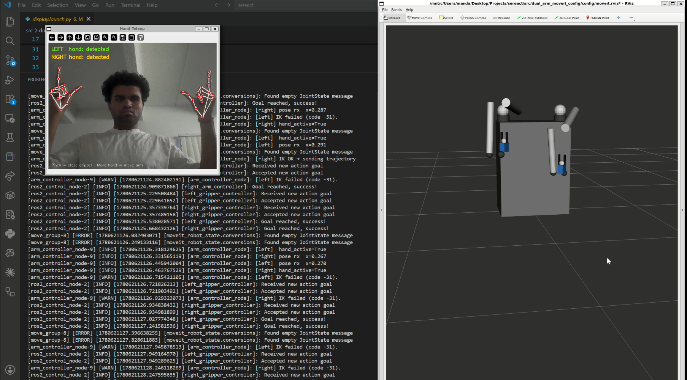
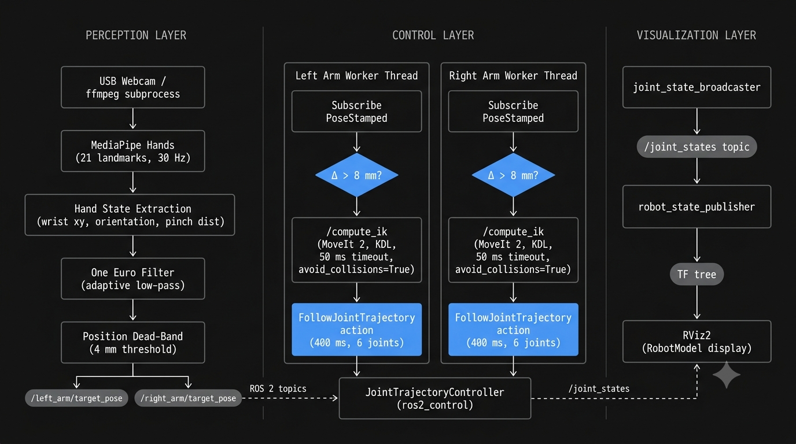

Problem Statement
To design and deploy a real-time dual-arm robot teleoperation system using only a commodity webcam, enabling simultaneous bilateral control of two 6-DOF robot arms through bare hand gestures, with no gloves, wearables, or depth sensors required.
- Built a complete dual-arm robot from scratch using URDF/Xacro: a parametric 6-DOF arm macro with UR5-inspired DH parameters instantiated twice on a shared stand, with full inertial properties and ros2_control mock hardware integration.
- Implemented a real-time MediaPipe Hands perception pipeline tracking 21 landmarks per hand at 30 Hz, mapping wrist position and wrist-to-finger orientation into end-effector target poses in 3D robot Cartesian space.
- Solved IK in real time via MoveIt 2's collision-aware GetPositionIK service using a KDL Jacobian-based numerical solver with a 50 ms hard timeout and SRDF-enforced self-collision avoidance across both arms simultaneously.
- Applied the One Euro Filter: an adaptive low-pass filter that lowers its cutoff frequency when the hand is stationary and raises it during fast motion, eliminating MediaPipe jitter at rest without adding perceptible lag during deliberate gestures.
- Engineered pinch-to-grip control from 3D thumb-index distance normalized to gripper joint travel (0–35 mm), with independent JointTrajectoryControllers per arm and gripper to allow asynchronous command rates and overlapping execution.

System Architecture
The pipeline separates cleanly into three layers. The perception layer (teleop_node.py) captures frames via a custom ffmpeg subprocess, runs MediaPipe Hands detection, applies the One Euro Filter and a 4 mm position dead-band, then publishes target PoseStamped messages and gripper commands over ROS 2 topics.
The control layer (arm_controller_node.py) runs background worker threads per arm, each polling at 50 Hz, calling MoveIt's /compute_ik service asynchronously, and dispatching single-point FollowJointTrajectory goals only when the new target is more than 8 mm from the last executed position.
MoveIt's full motion planner (OMPL) is intentionally bypassed. Direct IK → trajectory execution keeps end-to-end latency under 50 ms and avoids the variable planning time and exaggerated arc paths OMPL generates for small incremental movements.

6-Layer Noise Rejection
Monocular hand tracking is inherently noisy, landmarks jitter sub-pixel even for a stationary hand, and tracking confidence drops during fast motion or partial occlusion. A single filter cannot satisfy both requirements (heavy smoothing at rest, low lag during motion), so the system stacks six independent rejection mechanisms across the pipeline.
The result is a teleoperation system that holds perfectly still when the operator is stationary, tracks fast sweeping gestures without lag, and recovers cleanly when a hand briefly leaves the frame, all without any special calibration step.
- Solved a critical WSL2 camera hang: OpenCV's cv2.VideoCapture blocks indefinitely on USB-forwarded devices. The fix, a custom _FfmpegCamera class spawning an ffmpeg subprocess with MJPEG input and raw BGR24 stdout piped into numpy, is hidden behind an identical isOpened()/read() interface for drop-in replacement on native Linux.
- Designed an image-to-workspace coordinate mapping that converts normalized MediaPipe positions [0,1]² to robot Cartesian meters: wrist X maps to ±EE lateral reach, wrist Y (inverted) maps to EE height, and wrist-to-finger angle maps to ±90° EE yaw: all with configurable workspace bounds.
- Configured the SRDF with precise disabled collision pairs, suppressing adjacent-link false positives while keeping distal cross-arm pairs fully active, so MoveIt correctly rejects any IK solution where the two arms would intersect each other.
- Used a MultiThreadedExecutor with ReentrantCallbackGroup so left-arm and right-arm subscription callbacks run concurrently, preventing an IK call on one arm from blocking teleoperation updates on the other.